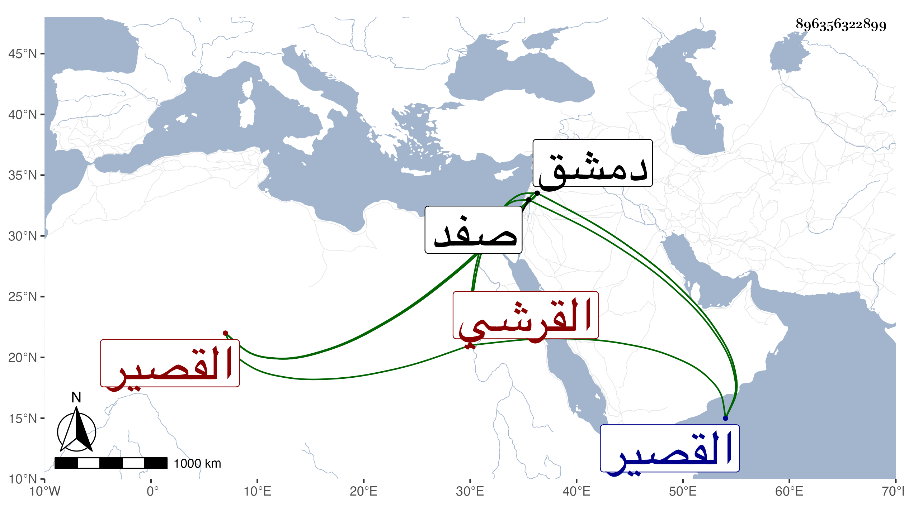

0902Sakhawi.DawLamic.ITO20230111-ara1.EIS1600.896356322899
Biography ID: 896356322899
أحمد بن إبراهيم بن عيسى الشهاب بن البرهان القرشي ويعرف بابن البرهان ولي قضاء القصير وغيره من عمل دمشق ثم قضاء صفد مرارا وتوفي بها في يوم الجمعة ثالث عشر رجب سنة تسع عشرة وقد قارب الثمانين قال ابن قاضي شهبة وكان قليل المعرفة للفقه حضر عندي إلى مجلس الحكم بدمشق في سنة ست وعشرين ورأيت منه ذلك زاد غيره وسمع على جماعة كثيرين وكان أبوه أيضا قاضيا .
